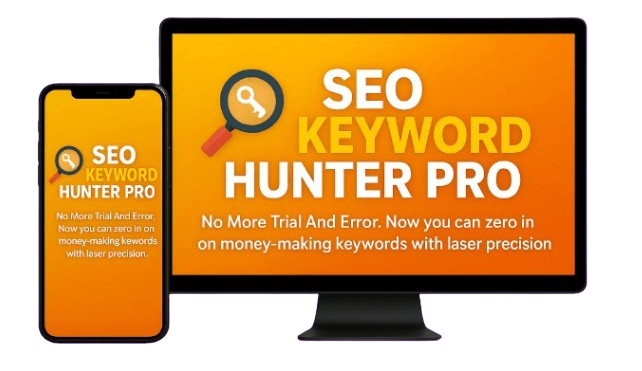
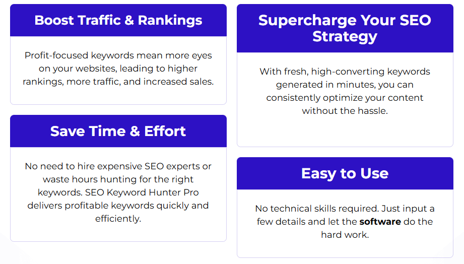
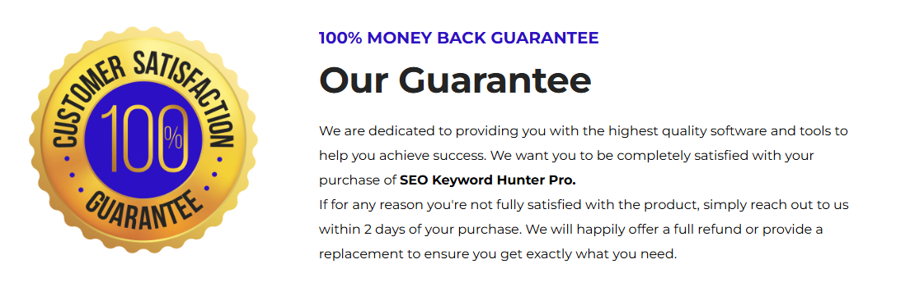

Finding profitable keywords shouldn't feel like decoding a puzzle. That’s where SEO Keyword Hunter Pro shines—this beginner-friendly tool delivers instant, buyer-intent keywords without the overwhelm or agency fees.
 Buy Now - Get Your DiscountSEO Keyword Hunter Pro is an easy-to-use SEO tool that helps users discover profitable keywords quickly. It’s perfect for beginners and designed to work across any niche.
Here are some of the standout features that make SEO Keyword Hunter Pro a game-changer:

Clean design, no training required. Great for beginners.
Focuses on search terms likely to convert into sales.
See what keywords competitors are ranking for and find new opportunities.
Affordable and efficient compared to agency fees or high-end software.
From wellness to tech, it adapts easily to different industries.
Go to Sales Page| Feature | SEO Keyword Hunter Pro | Ubersuggest | Ahrefs |
|---|---|---|---|
| Price | $17 (one-time) | $29/month | $99/month |
| Ease of Use | ✅ Very Simple | ✅ Simple | ❌ Complex |
| Competitor Analysis | ✅ Included | ✅ Limited | ✅ Advanced |
| Beginner-Friendly | ✅ Excellent | ✅ Good | ❌ Steep Learning Curve |
Beyond its core functionalities, SEO Keyword Hunter Pro offers exceptional value:
Ideal for:
Not ideal for: Large teams or data-heavy agencies
If you're looking for a no-fuss, low-cost keyword research tool that works, SEO Keyword Hunter Pro is a fantastic choice. Simple, affordable, and surprisingly powerful.
Buy NowYes, it works globally and adapts to any niche or market.
It requires a one-time payment of $17, with no recurring fees.
No technical skills are needed — it’s designed to be beginner-friendly.
Yes, by targeting buyer-intent keywords, it helps increase your site’s traffic and conversions.
It finds high-converting keywords that attract ready-to-buy audiences, boosting sales.
Yes, there’s a 2-day money-back guarantee if you’re not satisfied.
Absolutely, it’s perfect for affiliate marketers to find profitable keywords and niches.
Yes, it includes simple guides so beginners can start quickly.